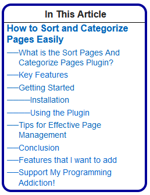
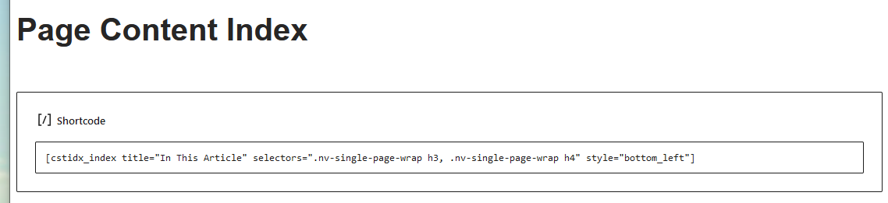

Contributors: sloanthrasher
Donate link: https://sloansweb.com/say-thanks
Tags: table of contents, idx, index, page index, headings
Requires at least: WordPress 5.0
Tested up to: WordPress 6.6
Requires PHP: 7.2
Stable tag: 1.0
License: GPLv3 or later
License URI: http://www.gnu.org/licenses/gpl-3.0.html
Plugin URI: https://sloansweb.com/page-6/
Author: Sloan Thrasher
Author URI: https://sloansweb.com/about/
cstidx_makeindex is a WordPress plugin designed to generate a dynamic, hierarchical index of page content based on headings using a customizable shortcode. The plugin automatically indexes page sections such as headings, classes, or any other specified elements. This is especially helpful for longer pages, enabling users to navigate directly to specific areas of interest.
[cstidx_index] shortcode in any page or post to generate the index.Simply add the [cstidx_index] shortcode to any post or page where you want the index to appear.
Yes! The plugin includes six built-in styles. Additionally, you can use the 'Custom' option to add your own CSS in the plugin's settings.
By default, the plugin indexes h2, h3, and h4 headings. You can modify the
default selectors in the settings.
Shows an example of the generated index on a page.
The settings page where the index customization options are configured.
3. **Shortcode** - Shortcode Example.How a shortcode might appear in a post or page.
First release. No upgrade necessary.
This plugin is licensed under the GPLv3 or later. For more information, visit GPL License.